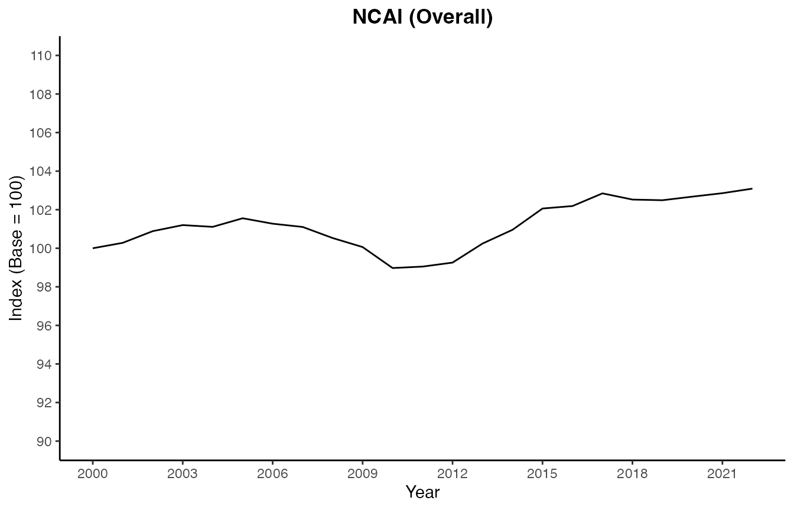
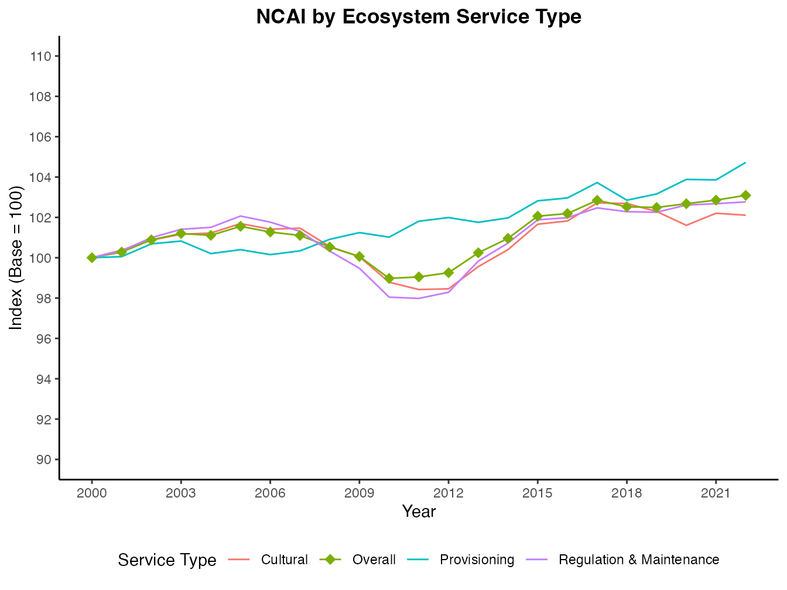
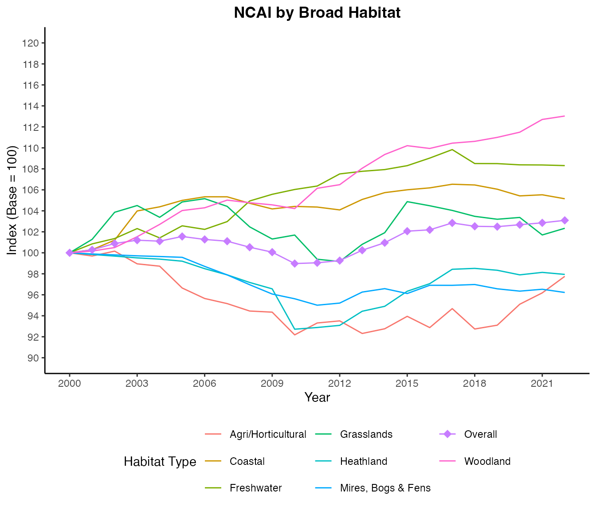

vignettes/replicating_scotlands_ncai.Rmd
replicating_scotlands_ncai.RmdThe openNCAI package calculates a regional natural capital assets index (NCAI) using the method designed by NatureScot to calculate Scotland’s NCAI. The idea behind the NCAI is that by finding a way to express changing the value of natural capital, we make it easier for policymakers to consider the role of the natural environment in our well-being and the economy.
Why build this package? By engineering the NCAI process in R, we make it easy to create a reproducible trace of the calculation. That means that a reader can see exactly how the statistic was produced and check its validity, and take and use the calculator for themselves.
By building the calculation as an R function, we make it easy to make custom adjustments to the framework. For example, another country might want to index their natural capital assets; by feeding in their own data and their own habitat and ecosystem classifications, they can do so. NatureScot’s method uses habitat and ecosystem classifications based on established taxonomies - European Nature Information System (EUNIS) habitat types, and the Common International Classification of Ecosystem Services - so there is likely to be shared relevance for other European regions.
Building a reusable, customisable tool also means that we can explore some of the assumptions which underpin the NCAI model, or update them. We might decide that, 20 years after the index was first designed, some natural assets are more valuable to the population than they were before. We can reprogram the index and see if the story changes. We might like to know if new satellite imagery could replace the ecological surveys which currently provide data about the extent and condition of natural habitats. We could calculate the index with both types of data and compare the results.
In this vignette, we work through reproducing the Scottish statistic, using data assets provided by NatureScot used to calculate the index in years 2000 - 2022.
openNCAI comes bundled with a set of data assets used by NatureScot to calculate Scotland’s NCAI from 2000 to 2022.
Because these are built in to the package we can access the data objects directly. For example, we can show a snippet of the habitat extent data by calling the object ‘ns_habitat_extent’:
head(ns_habitat_extent[,1:3])
#> 2000 2001
#> b1_coastal_dunes_and_sandy_shores 27778 27778
#> b2_coastal_shingle 3204 3204
#> b3_rock_cliffs_ledges_and_shores_including_the_supralittoral 8108 8108
#> c_inland_surface_waters 249678 249678
#> d1_raised_and_blanket_bogs 972038 972038
#> d2_valley_mires_poor_fens_and_transition_mires 1019 1019
#> 2002
#> b1_coastal_dunes_and_sandy_shores 27778
#> b2_coastal_shingle 3204
#> b3_rock_cliffs_ledges_and_shores_including_the_supralittoral 8108
#> c_inland_surface_waters 249678
#> d1_raised_and_blanket_bogs 972038
#> d2_valley_mires_poor_fens_and_transition_mires 1019openNCAI requires three types of data:
Metadata which define the natural habitats under consideration, the ecosystem services they provide, and the years across which the index is to be calculated,
Environmental measurements recording the extent and condition of the natural habitats over the years,
Weighting scores - decided by experts at the beginning of the process; these denote the relative importance of different ecosystem services, the potential of different habitats to provide each each, and the salience of the available habitat condition indicators to represent flow of services from habitats.
Let’s find out more about the contents and shape of the included data objects which fulfill these roles…
Three metadata objects are included:
| Object Name | Description | Data Format |
|---|---|---|
| ns_habitats_label_tree | Habitats Label Tree: a hierarchy of natural habitats (based on EUNIS level 2) grouped within their respective broad habitat categories (EUNIS level 1) found in Scotland. | A named list of character vectors where names are broad habitats and vectors contain the specific habitats within them. |
| ns_es_label_tree | Ecosystem Services Label Tree: a hierarchy of individual ecosystem services organized by their service type groups (Provisioning, Regulation & Maintenance, and Cultural). | A named list of character vectors where names are service types and vectors contain the individual services. |
| ns_year_list | Year List: the specific range of years over which the index is calculated. | A character vector of years. |
It is important that all measurement and weights objects are congruent with the metadata. E.g. time series data must include all the years mentioned in the year list, and weighting scores must be expressed across the habitats and ecosystem services listed in the label trees.
Also required but not included explicitly as a data object is a
list of condition indicators (CIs): this is extracted
from the column names of the Condition Indicator Score Matrix
(ns_ci_scores) described in the next table.
We can inspect the objects and verify some of the dimensions and labels:
# The label trees are nested lists.
# E.g. See the first couple of broad habitats and the habitats within them.
ns_habitats_label_tree[1:2]
#> $b_coastal_habitats
#> [1] "b1_coastal_dunes_and_sandy_shores"
#> [2] "b2_coastal_shingle"
#> [3] "b3_rock_cliffs_ledges_and_shores_including_the_supralittoral"
#>
#> $c_inland_surface_waters
#> [1] "c_inland_surface_waters"
# Or the names of the ES label tree:
names(ns_es_label_tree)
#> [1] "provisioning" "regulation_and_maintenance"
#> [3] "cultural"
# And the labels within the last group 'Cultural':
ns_es_label_tree[3]
#> $cultural
#> [1] "physical_and_experiential_interactions_3_1"
#> [2] "heritage_scientific_and_educational_interactions_3_2"
#> [3] "aesthetic_and_entertainment_interactions_3_3"
#> [4] "symbolic_sacred_and_or_religious_interactions_3_4"
#> [5] "existence_and_bequest_3_5"These measures constitute time series recording the extent (area) and condition of natural habitats over the years of the index. Included are:
| Object Name | Description | Data Format |
|---|---|---|
| ns_habitat_extent | Habitat Extent for Scotland: measurement in hectares of the area of each natural habitat over the years. | A data frame where rows are habitats and columns are years. |
| ns_ci_scores | Condition Indicator Score Matrix: yearly condition score on each of the Condition Indicators (CIs). | A data frame where rows are years and columns are CIs. |
Note that the dimensions and labelling of the measurement data should match the metadata:
# E.g. The habitat extent data has 31 rows and 23 columns:
dim(ns_habitat_extent)
#> [1] 31 23
# The 31 rows match the habitats in the (unlisted) Habitats label tree:
all_habitats <- unlist(ns_habitats_label_tree, use.names = FALSE)
length(all_habitats)
#> [1] 31
all.equal(all_habitats, rownames(ns_habitat_extent))
#> [1] TRUE
# The condition score data has one row per year and these years match the year list:
dim(ns_ci_scores)
#> [1] 23 38
length(ns_year_list)
#> [1] 23
# The row names match the year list too:
all.equal(rownames(ns_ci_scores), ns_year_list)
#> [1] TRUEThese data objects include scores decided by expert knowledge at the outset of the index. Included are:
| Object Name | Description | Data Format |
|---|---|---|
| ns_esppu_scores | Ecosystem Service Provision Potential per Unit Scores: scores denoting the relative potential of one area unit of a habitat to provide each of the ecosystem services. | A data frame where rows are habitats and columns are ecosystem services. |
| ns_between_importance_scores | Ecosystem Service Importance Scores (between-service-type): scores denoting the relative importance of the different ecosystem service types (‘Provisioning’, ‘Regulation & Maintenance’, ‘Cultural’) to Scotland. | A named list of numeric values where names match the top-level names of the Service Label Tree. |
| ns_within_importance_scores | Ecosystem Service Importance Score (within-service-type): scores denoting the relative importance of individual ecosystem services within their service type group. | A nested list of named lists, with a hierarchy matching the Service Label Tree. |
| ns_ci_relevance_matrices | Condition Indicator Relevance Matrices: a set of matrices marking whether an indicator is relevant to specific habitat/ecosystem service combinations (e.g., ‘Woodland bird index’ relevance to ‘Pollination’). | A named list of data frames (one per CI) with binary (1/0) values; rows are habitats and columns are ecosystem services. |
| ns_indicator_directory | Indicator Directory: a table recording the salience of each condition indicator (between 0 and 1) in representing the capacity of habitats to provide each ecosystem service type. | A data frame with a ci_id column and
columns for each ecosystem service type containing salience scores. |
| ns_custom_weight_matrix | NatureScot’s Custom Divisor Matrix: weights used to adjust potential provision scores to reflect scale and context dependence (e.g., adjusting scores by dividing by 1 instead of 5). | A data frame where row names are habitats and column names are ecosystem services. |
Several of the weights objects are matrices of habitat / ecosystem service type. These are provided as data frames with rows matching the unlisted habitats label tree and columns matching the unlisted ecosystem service label tree:
all_habitats <- unlist(ns_habitats_label_tree, use.names = FALSE)
all_ecosystem_services <- unlist(ns_es_label_tree, use.names = FALSE)
# The ESPPU, any custom divisor matrix, and each matrix in the CIRMs list need to match:
one_ci_relevance_matrix <- ns_ci_relevance_matrices[[4]]
length(all_habitats)
#> [1] 31
nrow(ns_esppu_scores)
#> [1] 31
nrow(ns_custom_divisor_matrix)
#> [1] 31
nrow(one_ci_relevance_matrix)
#> [1] 31
all.equal(all_habitats, rownames(ns_esppu_scores))
#> [1] TRUE
all.equal(all_habitats, rownames(ns_custom_divisor_matrix))
#> [1] TRUE
all.equal(all_habitats, rownames(one_ci_relevance_matrix))
#> [1] TRUE
length(all_ecosystem_services)
#> [1] 28
ncol(ns_esppu_scores)
#> [1] 28
ncol(ns_custom_divisor_matrix)
#> [1] 28
ncol(one_ci_relevance_matrix)
#> [1] 28
all.equal(all_ecosystem_services, colnames(ns_esppu_scores))
#> [1] TRUE
all.equal(all_ecosystem_services, colnames(ns_custom_divisor_matrix))
#> [1] TRUE
all.equal(all_ecosystem_services, colnames(one_ci_relevance_matrix))
#> [1] TRUEThe index is calculated using the get_ncai() function.
By default the final overall index is returned.
overall_ncai <- get_ncai(
habitat_extent = ns_habitat_extent,
ci_scores = ns_ci_scores,
habitats_label_tree = ns_habitats_label_tree,
es_label_tree = ns_es_label_tree,
year_list = ns_year_list,
esppu_scores = ns_esppu_scores,
custom_divisor_matrix = ns_custom_divisor_matrix,
between_importance_scores = ns_between_importance_scores,
within_importance_scores = ns_within_importance_scores,
ci_relevance_matrices = ns_ci_relevance_matrices,
indicator_directory = ns_indicator_directory
)
# Three versions of the index are returned, the raw total, the raw index, and the smoothed index (values are a weighted average of the last 5 years' values, giving more weight to more recent entries):
head(overall_ncai)
#> raw_total raw_index smoothed_index
#> 2000 10000.00 100.0000 100.0000
#> 2001 10028.10 100.2810 100.1561
#> 2002 10088.68 100.8868 100.4632
#> 2003 10120.13 101.2013 100.7426
#> 2004 10110.95 101.1095 100.9050
#> 2005 10155.58 101.5558 101.1917
# We can select just the raw indexed values to display:
raw_index <- overall_ncai[, "raw_index", drop = FALSE]
raw_index
#> raw_index
#> 2000 100.00000
#> 2001 100.28103
#> 2002 100.88681
#> 2003 101.20128
#> 2004 101.10951
#> 2005 101.55579
#> 2006 101.27365
#> 2007 101.10488
#> 2008 100.53071
#> 2009 100.06247
#> 2010 98.97437
#> 2011 99.04897
#> 2012 99.25694
#> 2013 100.24472
#> 2014 100.95796
#> 2015 102.06066
#> 2016 102.18951
#> 2017 102.84662
#> 2018 102.52536
#> 2019 102.49089
#> 2020 102.67712
#> 2021 102.85577
#> 2022 103.09185And we can graph the index:
# Make some nice display labels:
graph_labels <- c(
"overall"
= "Overall",
# --- Service Types ---
"provisioning"
= "Provisioning",
"regulation_and_maintenance"
= "Regulation & Maintenance",
"cultural"
= "Cultural",
# --- Broad Habitats ---
"b_coastal_habitats"
= "Coastal",
"c_inland_surface_waters"
= "Freshwater",
"d_mires_bogs_and_fens"
= "Mires, Bogs & Fens",
"e_grasslands_and_lands_dominated_by_forbs_mosses_or_lichens"
= "Grasslands",
"f_heathland_scrub_and_tundra"
= "Heathland",
"g_woodland_forest_and_other_wooded_land"
= "Woodland",
"h_inland_unvegetated_or_sparsely_vegetated_habitats"
= "Inland Unvegetated",
"i_cultivated_agricultural_horticultural_and_domestic_habitats"
= "Agri/Horticultural",
"j_constructed_industrial_and_other_artificial_habitats"
= "Constructed",
"k_montane"
= "Montane"
)
# Prepare overall index data:
main_index_for_plot <- overall_ncai |>
rownames_to_column(var = "year") |>
mutate(
year = as.numeric(year),
breakdown = "overall",
display_name = recode(breakdown, !!!graph_labels)
)
# Plot the Overall Index
overall_plot <- ggplot(main_index_for_plot, aes(x = year, y = raw_index)) +
geom_line() +
scale_y_continuous(
limits = c(90, 110), # <--- Forces the 90-110 range
breaks = seq(90, 110, by = 2)
) +
scale_x_continuous(
breaks = seq(2000, 2022, by = 3)
) +
labs(
title = "NCAI (Overall)",
x = "Year",
y = "Index (Base = 100)"
) +
theme_classic() +
theme(plot.title = element_text(face = "bold", hjust = 0.5))
overall_plot
By passing "index_by_st" or "index_by_bh"
to the optional return argument, we can generate a list of
data frames containing the index broken down ecosystem service type or
by broad habitat respectively.
ncai_by_st <- get_ncai(
habitat_extent = ns_habitat_extent,
ci_scores = ns_ci_scores,
habitats_label_tree = ns_habitats_label_tree,
es_label_tree = ns_es_label_tree,
year_list = ns_year_list,
esppu_scores = ns_esppu_scores,
custom_divisor_matrix = ns_custom_divisor_matrix,
between_importance_scores = ns_between_importance_scores,
within_importance_scores = ns_within_importance_scores,
ci_relevance_matrices = ns_ci_relevance_matrices,
indicator_directory = ns_indicator_directory,
return = "index_by_st"
)
# A named list of data frames is returned, with names as per the ES label tree:
names(ncai_by_st)
#> [1] "provisioning" "regulation_and_maintenance"
#> [3] "cultural"
# See the contribution of cultural services to the index:
cultural_breakdown <- ncai_by_st[["cultural"]]
cultural_breakdown
#> raw_total raw_index smoothed_index
#> 2000 2500.000 100.00000 100.00000
#> 2001 2509.514 100.38055 100.21142
#> 2002 2521.865 100.87461 100.49127
#> 2003 2529.042 101.16166 100.74631
#> 2004 2530.575 101.22299 100.94310
#> 2005 2542.311 101.69242 101.26459
#> 2006 2535.326 101.41305 101.38012
#> 2007 2536.635 101.46540 101.44427
#> 2008 2513.816 100.55263 101.16478
#> 2009 2501.241 100.04965 100.75823
#> 2010 2469.636 98.78545 100.00851
#> 2011 2460.564 98.42256 99.33162
#> 2012 2461.489 98.45957 98.86643
#> 2013 2488.915 99.55661 98.96731
#> 2014 2510.062 100.40248 99.41654
#> 2015 2541.542 101.66169 100.26199
#> 2016 2545.552 101.82208 100.96916
#> 2017 2567.946 102.71785 101.74828
#> 2018 2567.179 102.68715 102.23328
#> 2019 2557.325 102.29299 102.37820
#> 2020 2540.163 101.60651 102.16825
#> 2021 2555.090 102.20362 102.16102
#> 2022 2552.717 102.10868 102.09670We can plot the breakdowns with the main trend line.
# Set up the data:
by_st_for_plot <- ncai_by_st[names(ns_es_label_tree)] |>
lapply(function(df) {
df |>
rownames_to_column(var = "year") |>
mutate(year = as.numeric(year)) # Convert here!
}) |>
bind_rows(.id = "breakdown") |>
bind_rows(main_index_for_plot) |>
mutate(
display_name = recode(breakdown, !!!graph_labels)
)
# Build the plot
st_plot <- ggplot(by_st_for_plot, aes(x = year, y = raw_index, color = display_name)) +
# Basic lines
geom_line() +
# Point marker for overall line to distinguish trend
geom_point(
data = filter(by_st_for_plot, breakdown == "overall"),
shape = 18,
size = 3
) +
# Fix the Y scale to match the 90-110 range
scale_y_continuous(
limits = c(90, 110), # Forces the axis to show the full range
breaks = seq(90, 110, by = 2) # Sets consistent tick marks
) +
# Consistent X scale
scale_x_continuous(
breaks = seq(2000, 2022, by = 3)
) +
# Labels
labs(
title = "NCAI by Ecosystem Service Type",
x = "Year",
y = "Index (Base = 100)",
color = "Service Type"
) +
# Classic theme (solid axis lines, no grid)
theme_classic() +
# Minimal centering for the title
theme(
plot.title = element_text(face = "bold", hjust = 0.5)
)
st_plot +
theme(legend.position = "bottom") +
guides(color = guide_legend(nrow = 1))
And we can use the same approach to generate a breakdown by broad habitat:
ncai_by_bh <- get_ncai(
habitat_extent = ns_habitat_extent,
ci_scores = ns_ci_scores,
habitats_label_tree = ns_habitats_label_tree,
es_label_tree = ns_es_label_tree,
year_list = ns_year_list,
esppu_scores = ns_esppu_scores,
custom_divisor_matrix = ns_custom_divisor_matrix,
between_importance_scores = ns_between_importance_scores,
within_importance_scores = ns_within_importance_scores,
ci_relevance_matrices = ns_ci_relevance_matrices,
indicator_directory = ns_indicator_directory,
return = "index_by_bh"
)
# We get a list of data frames with names as per the top level of the habitats label tree:
names(ncai_by_bh)
#> [1] "b_coastal_habitats"
#> [2] "c_inland_surface_waters"
#> [3] "d_mires_bogs_and_fens"
#> [4] "e_grasslands_and_lands_dominated_by_forbs_mosses_or_lichens"
#> [5] "f_heathland_scrub_and_tundra"
#> [6] "g_woodland_forest_and_other_wooded_land"
#> [7] "h_inland_unvegetated_or_sparsely_vegetated_habitats"
#> [8] "i_cultivated_agricultural_horticultural_and_domestic_habitats"
#> [9] "j_constructed_industrial_and_other_artificial_habitats"
#> [10] "k_montane"
# See the contribution to the index of the broad habitat group Mires, Bogs and Fens:
bogs_breakdown <- ncai_by_bh[["d_mires_bogs_and_fens"]]
bogs_breakdown
#> raw_total raw_index smoothed_index
#> 2000 1557.837 100.00000 100.00000
#> 2001 1556.131 99.89046 99.93915
#> 2002 1554.726 99.80031 99.88029
#> 2003 1553.346 99.71172 99.81652
#> 2004 1552.324 99.64607 99.75061
#> 2005 1551.115 99.56849 99.67020
#> 2006 1537.672 98.70559 99.33093
#> 2007 1525.047 97.89512 98.80049
#> 2008 1510.445 96.95780 98.08462
#> 2009 1496.640 96.07168 97.25697
#> 2010 1489.613 95.62060 96.51726
#> 2011 1480.050 95.00671 95.83611
#> 2012 1483.200 95.20895 95.46897
#> 2013 1499.544 96.25807 95.63061
#> 2014 1504.624 96.58415 95.94759
#> 2015 1497.383 96.11935 96.07548
#> 2016 1509.626 96.90527 96.43208
#> 2017 1509.565 96.90136 96.66082
#> 2018 1510.758 96.97794 96.80225
#> 2019 1504.393 96.56932 96.75949
#> 2020 1500.939 96.34760 96.64381
#> 2021 1503.735 96.52712 96.57275
#> 2022 1498.959 96.22051 96.42469NatureScot typically reports the contribution to the index of a subset seven of the broad habitats. We can build this list and, as before, graph these contributions with the main trend line.
# Specify custom list of broad habitats to use:
ns_bh_breakdown_list <- c(names(ns_habitats_label_tree)[c(1:6, 8)])
# Prepare the data:
by_bh_for_plot <- ncai_by_bh[ns_bh_breakdown_list] |>
lapply(function(df) {
df |>
rownames_to_column(var = "year") |>
mutate(year = as.numeric(year))
}) |>
bind_rows(.id = "breakdown") |>
bind_rows(main_index_for_plot) |>
mutate(
display_name = recode(breakdown, !!!graph_labels)
)
# Build the plot:
bh_plot <- ggplot(by_bh_for_plot, aes(x = year, y = raw_index, color = display_name)) +
# Lines for all habitats
geom_line() +
# Diamond marker on the overall trend line
# We filter by 'breakdown' because that remains "overall" internally
geom_point(
data = filter(by_bh_for_plot, breakdown == "overall"),
shape = 18,
size = 3
) +
# Fix the Y scale
scale_y_continuous(
limits = c(90, 120), # Forces the axis to show the full range
breaks = seq(90, 120, by = 2) # Sets consistent tick marks
) +
# Consistent X scale
scale_x_continuous(
breaks = seq(2000, 2022, by = 3)
) +
# Labels
labs(
title = "NCAI by Broad Habitat",
x = "Year",
y = "Index (Base = 100)",
color = "Habitat Type"
) +
# The requested classic theme
theme_classic() +
# Minimal centering for the title
theme(
plot.title = element_text(face = "bold", hjust = 0.5)
)
bh_plot +
theme(legend.position = "bottom") +
guides(color = guide_legend(nrow = 3))
Using the optional return argument, we can access
various elements of the calculation process. The following options are
available to be passed to return:
| Argument Value | Output Type | Description |
|---|---|---|
| “overall” | Data Frame | The final smoothed and raw NCAI for the whole region (default). |
| “index_by_st” | Data Frame | Indices broken down by Ecosystem Service Type. |
| “index_by_bh” | Data Frame | Indices broken down by Broad Habitat. |
| “espb” | Data Frame | Ecosystem Service Potential Base: the potential of habitats to provide ecosystem services, calculated as habitat extent multiplied by Ecosystem Service Provision Potential per Unit weights. |
| “wellbeing_base” | Data Frame | Wellbeing Base: the potential service provision, adjust for importance of each service to the population, calculated as the ESPB weighted by the regional Importance Weights. |
| “yearly_flow_matrices” | List of Data Frames | Total Yearly Flow: the estimated total yearly flow of services from each habitat/service combination, based on relevance- and salience-weighted Condition Indicator scores. |
| “yearly_asset_matrices” | List of Data Frames | Matrices of total asset value for every habitat/service combination per year, calculated by multiplying the Wellbeing Base by the Total Yearly Flow. The sum of these matrices form the basis of the final index. |
| “everything” | List of Objects | A bundled list containing all of the above components. |